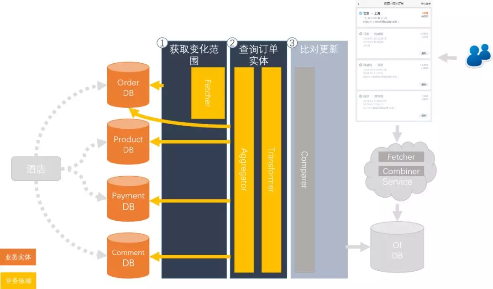

作者简介
唐巍，携程用户平台部订单服务组资深后端开发，在互联网尤其是移动互联网方面有丰富的经验，目前主要负责OrderIndex的维护和架构升级工作。
经过团队几个月的努力，我们最近终于完成了OI（订单索引服务）从1.0到2.0升级的里程碑，上线了新的数据同步平台和对应的数据查询服务。在这里我们总结了其中的经验和心得，希望能给大家，尤其是有做跨多业务线或者复杂系统需要升级改造的同学们，一点启发或者是帮助。
一、什么是OI？
携程的众多业务线订单信息分布在各业务线不同的订单系统之中，有各自独立的查询服务，而公司内部又存在着大量跨业务线查询统一订单信息的诉求，为解决这样的痛点，OI 项目应运而生。
OI的全称是OrderIndex（订单索引服务），是“携程APP-我的携程-订单列表”的订单信息数据源，是一个以“聚合不同数据来源的订单信息，并提供统一分类查询功能”为核心业务的系统。
二、OI 1.0
OI1.0是目前支撑OI业务的主力系统，上线于2013年。查询服务基于公司的SOA服务治理平台开发。订单同步和辅助Job基于公司的作业调度平台（JosWS）开发。
其中核心机制如下图。

OI 1.0的订单同步机制
数据同步以及下发流程如下：
1）对应业务线订单的订单同步Job，从业务线的订单数据库通过扫描相关表的时间戳，来感知订单变化（获取变化的订单号orderid）；
2）通过业务线提供的拉取订单详情的SQL从业务线订单数据库读取订单详情相关数据；
3）根据业务线提供的业务，将从业务线数据库拉取的订单详情相关数据转化为实际的订单数据，并规整后保存到OI的数据库中；
4）在OI的接口调用方通过SOA服务来查询订单信息的时候，将我们同步过来的订单信息透传下发；
基于这样的架构和机制，截止目前，OI 1.0聚合了超过50+数据源，160+业务线的订单数据，总量超过5亿条。并通过实时数据查询服务以及订单变更消息通知以毫秒级的订单同步延迟，支撑了下游超过200个系统共计日均4亿+次的订单查询需求，并且，这些数字还在不断的变大。可以预见，OI 在之后还会承担更重要的责任。
虽然目前OI 1.0看起来仍然运行良好，但是随着 OI 业务的不断扩展，我们也发现了一些问题。
1）业务线提供的数据源只支持直连DB，并且需要提供的接入信息非常复杂
需要Db提供生产核心订单库的访问权限，有安全风险
需提供所有相关表的表结构以及字段说明，并提供跟实际订单信息之间的关联转化逻辑
绝大部分情况下，订单的信息变更必须反映到订单主表的时间戳变更上，否则无法感知到订单变化
2）业务线提供的订单数据源结构各不相同，还需结合配套业务使用
订单接入和修改需要我方产品、开发、和测试人员理解业务线的所有相关业务，并理解其原始数据到 OI 数据的转化过程，沟通成本和出错率高，响应也相对较慢（上线周期长），易出错。
由于各接入方数据不标准，验证数据和业务的正确性需要熟悉业务的开发、测试人员人工进行，比对点和工作量都很大。
3）大量的订单接入方（业务线），和 OI 服务的调用方希望我们接入大量的非标准字段，由于旧系统的各种限制，往往难以支持或者周期漫长
1.0系统并不支持扩展字段的添加，所有的扩展字段添加都需要定制开发（从指定 db 指定表的指定字段获取数据，再经过某种业务进行处理，最后落我们空余的某个 db 字段），若无空余字段，则无法支持
由于1.0系统中我们的字段大多有固定含义，所以能借用存放的空余字段不多
由于借用空余字段的存放，所以下发的部分字段，在不同场景下有不同的含义，数据使用方需知业务线原始业务，以及 OI 的字段命名映射逻辑（OI 下发的数据字段名跟业务方字段名不同）
4）OI感知订单变化依赖于业务线提供的 Sql 定制开发，出于对性能考虑通常只能扫描订单主表的变更，若订单变更有独立于订单主表之外的，感知订单变化的部分的实现会特别复杂。
一旦业务线修改感知订单变化的业务或者新加渠道，OI 都需要重新修改代码，或者新增 Job 支持
订单直接物理删除，感知不到变化，需业务线配合，新增物理删除订单信息同步
5）同步 Job 依赖于公司的 Job 调度平台，由于调度平台的限制，
每新增一个 Job 都需要开发一个对应的 Job 类，并发布代码，流程长，风险大
若一个实例需要多活，需要在 Job 调度平台中针对每个实例，单独手工配置 Job 调度任务
6）公司内的合作部门，有数据接入 OI 的需求，但是因为目前系统的实现机制评估下来工作量，以现有的人力完全无法支撑。
下图是我们迫切需要解决的问题：

于是我们决定对 OI 进行改造升级，彻底解决这些问题。
三、OI 2.0
首先，我们对于 OI 进行了重新定义：
OI 是一个提供了基于标准化流程接入，针对订单数据提供统一汇聚、检索、输出、管理的数据平台。
基于全新的定位，重新设计了OI，新的架构如下：

OI 2.0的系统架构
主要改造方向有如下几点：

针对订单变更检测重新设计，提供新的接入方案。
1）业务线订单服务在更新订单时推送变更消息。
优点：时延最短
缺点：需业务线配合，开发成本高
2）基于订单数据库相关表的 Binlog 通过 Canal 组件推送变更消息。
优点：时延可以接受<500ms，开发成本极低
缺点：中间环节多，故障点增多，并且只支持mysql数据库
3）扩展了基于 sql 的变更检测，无需业务线再提供 sql，而是提供关联 db 信息。
优点：中间环节少，时延较低(<200ms)
缺点：耦合高，依赖业务线数据库访问权限

订单详情标准服务化改造
我们针对获取订单详情方式进行了重新设计，抛弃了过去通过 sql 直连 db 读取数据，在同步 Job 中进行转化的模式，重新抽象了订单的基础 MetaData，并以此为基础设计了一套新的标准详情服务接口契约，以此将业务进行抽像，将具体的业务实现从 OI 中剥离了出来，返还给了业务线。

OI平台化
将订单变更检测和订单详情数据源，以及订单的部分特殊标准信息（如订单状态等）全部作为meta通过统一配置管理平台来进行管理，并且自研了 Job调度模块以支持根据配置的数据源 MetaData，动态的生成同步 Job 来执行数据同步任务，并进行数据校验。
同样，SOA 数据查询服务基于相同的 MetaData， 来提供数据查询服务。
基于新的设计，订单同步流程也采用了新的模式。

平台化后的订单同步流程
1）首先，将需要同步的数据源 Meta 信息通过配置管理录入。
2）OI 同步平台根据数据源 Meta 信息生成同步 Task 和对应的同步 Job （若同一数据源有配置多种感知渠道，则生成多组同步 Task 及对应 Job）。
3）通过配置的订单感知渠道（db，消息队列，SOA服务），感知订单变化。
4）通过统一的标准 Facade Order Detail Service 获取，标准 MetaData 描述的订单信息。
5）将订单信息经过校验和变更比对后，更新（加入）到 OI 数据库。
6）通过标准 MetaData 的订单实体信息查询接口，将订单数据下发给服务调用方。
四、OI 2.0平台化，我们做了哪些具体的工作？
4.1 重新设计了统一接入信息模板，通过统一配置管理服务管理
基于平台化后的系统，重新设计了一份标准订单接入的信息模板，用来取代之前跟每个业务线针对所有数据源逐一讨论商定的接入信息文档。（不过暂时不支持接入方自主录入，需线下提供，审核完毕后，再录入Meta信息）。通过这个改变，将过去接入过程中贯穿始末的业务讨论时长从数周缩短到了一两次会议（电话或者面谈）就能沟通完毕的程度。
4.2 自研 Job 调度系统（JobHost）
我们放弃了使用公司已有的成熟通用 Job 调度系统，自研了一套 OI 定制的Job 调度系统，通过定制开发，支持了一些原本很难实现的功能。
1）结合统一信息模板，极大的简化了订单同步 Job 的复杂度，OI 的JobHost 默认会基于配置动态生成常规（Normal）同步 Task，同时也支持手工指定要同步的数据源来生成任意多个自定义的同步 Task（如针对部分数据进行数据清洗的补偿 Job，OI 1.0由于设计原因仅支持一个），并支持通过对数据源的开启标志的控制，实现对相关Job的实时联动控制（公司的调度系统需手工操作）。
2）运行状态监控粒度更细，由于定制开发，所以针对各种 Job 的不同运行步骤，设置了更丰富的监控点，更好的了解 Job 的运行状态。
3）除了守护 Task 会保持心跳，检查 JobHost 中运行的 Job 健康状态，尝试进行自动恢复外，我们还设计了人工干预的机制，可以针对运行在每一个实例中的任意 Job 进行更细微的调整。
4.3 自研的数据查询引擎（Sql+内存过滤, 根据策略编译查询条件）
为增加数据平台对异构数据存储结构的支持以及提供特定场景下的db数据读取优化，我们自研了一套简易的数据查询引擎。
上层服务只需要将数据查询请求，转化成平台统一的 OrderQuery，再注入一套 OrderQuery 编译策略，以支持将 OrderQuery 中的查询请求和过滤条件，转化为 DB 执行的 SQL语句以及内存中过滤的OrderFilter（同一过滤条件，在不同场景下通过SQL直接过滤，或者内存中过滤，效率可能会不同，查询引擎会根据编译策略，选择将该过滤条件build进sql语句中，或者是生成对应的OrderFilter）。
五、改造完成后的成果
前面零零散散讲了很多细节，大家对改造效果可能没有很直观的认识，我们再来看一张图。

这是我们在确认改造方案后，第一阶段的整体目标。
1）通过平台化改造以后，OI 不用再针对每一个业务线（订单业务类型）做定制开发，通过平台提供统一支持即可，整体复杂度降到了 O(1)，即使不熟悉 OI 的订单接入方，或者组内同学，又或者测试的同学，凭着简单的文档，也可以直接上手了，不用业务线再提供 sql 和 db 字段说明，也不用再提供 db 字段到实际订单数据的业务逻辑。
2）改造完成后，新接入一种订单（数据源），或者下线一个数据源只需要通过配置管理配置好数据源的 MetaData 即可，无需修改代码，也无需重启服务，实现了热插拔和热更新。
3）通过标准详情接口，将溢出到 OI 的业务线订单业务彻底归还业务线，业务线业务发生变动的时候，直接同步修改详情接口实现即可，无需再拉上 OI 一起排期改造，效率大大增加。
4）结合1-3带来的效率提升，在 OI2.0 数据平台上进行业务变动，在业务线准备好的情况下，基本上都能实现T+0上线。
5）基于全新的标准化改造，我们可以针对不同运行环节增加统一的监控点，实现更灵活的监控扩展。
最后，来看一张图：

这是之前，第一个里程碑完成时的 OI2.0交付情况。目前OI数据平台，已经能够多订单系统复用，支持携程订单体系和集团的某关联企业订单体系。
基于这还算坚实的第一步，我们会继续一步一个脚印，继续去完成我们所描绘的蓝图。
【推荐阅读】